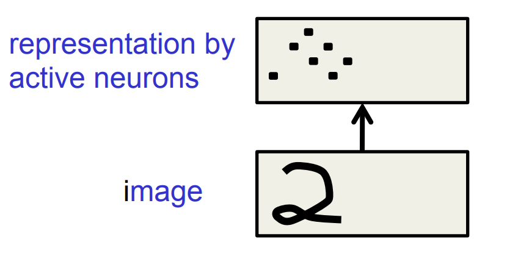
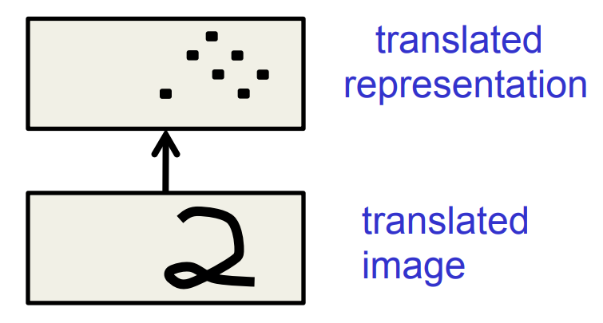

Lecture 5a: Why object recognition is difficult
We’re switching to a different application of neural networks: computer vision, i.e. having a computer really understand what an image is showing.
This video explains why it is difficult for a computer to go from an image (i.e. the color and intensity for each pixel in the image) to an understanding of what it’s an image of.
Some of this discussion is about images of 2-dimensional objects (writing on paper), but most of it is about photographs of 3-D real-world scenes.
Make sure that you understand the last slide:
It explains how switching age and weight is like an object moving over to a different part of the image (to different pixels).
These two might sound like very different situations, but the analogy is in fact quite good: they’re not really very different.
Understanding this is prerequisite for especially the next video.
Things that make it hard to recognize objects
{kind=link}
- Segmentation: Real scenes are cluHered with other objects:
- Its hard to tell which pieces go together as parts of the same object.
- Parts of an object can be hidden behind other objects.
- Lighting: The intensties of the pixels are determined as much by the lighting as by the objects.
- Deformation: Objects can deform in a variety of non-affine ways:
- e.g a hand-written 2 can have a large loop or just a cusp.
- e.g a hand-written 2 can have a large loop or just a cusp.
- Affordances: Object classes are often defined by how they are used:
- Chairs are things designed for sitting on so they have a wide variety of physical shapes.
More things that make it hard to recognize objects
{kind=link}
- Viewpoint: Changes in viewpoint cause changes in images that standard learning methods cannot cope with.
- Information hops between input dimensions (i.e. pixels)
- Information hops between input dimensions (i.e. pixels)
- Imagine a medical database in which the age of a patient sometimes hops to the input dimension that normally codes for weight!
- To apply machine learning we would first want to eliminate this dimension-hopping
Lecture 5b: Ways to achieve viewpoint invariance
“invariant” means, literally, that it doesn’t vary: it doesn’t change as a result of a change of viewpoint.
This means that if the neuron for the feature detector is fairly active (say it’s a logistic neuron and it has a value close to 1) for one input image, then if we give the neural network a image of that same scene from a somewhat different viewpoint, that same neuron will still be fairly active. Its activity is invariant under viewpoint changes.
“invariant” is a matter of degrees: there’s very little that’s completely invariant, or that has no invariance at all, but some things are more invariant than others.
The invariant features are things like “there’s a red circle somewhere in the image”, and the neuron for that feature detector should somehow learn to turn on when there is indeed a red circle in the input, and turn off if there isn’t.
Try to come up with examples of features that are largely invariant under viewpoint changes, and examples of features that don’t have that property.
Some ways to achieve viewpoint invariance
- We are so good at viewpoint invariance that it is hard to appreciate how difficult it is.
- Its one of the main difficulties in making computers perceive.
- We still don’t have generally accepted solutions.
- There are several different approaches:
- Use redundant invariant features.
- Put a box around the object and use normalized pixels.
- Lecture 5c: Use replicated features with pooling. This is called “convolutional neural nets”
- Use a hierarchy of parts that have explicit poses relative to the camera (this will be described in detail later in the course).
The invariant feature approach
- Extract a large, redundant set of features that are invariant under transformations
- e.g. pair of roughly parallel lines with a red dot between them.
- This is what baby herring gulls use to know where to peck for food.
- With enough invariant features, there is only one way to assemble them into an object.
- We don’t need to represent the relationships between features directly because they are captured by other features.
- For recognition, we must avoid forming features from parts of different objects.
The judicious normalization approach
- Put a box around the object and use it as a coordinate frame for a set of normalized pixels.
- This solves the dimension-hopping problem. If we choose the box correctly, the same part of an object always occurs on the same normalized pixels.
- The box can provide invariance to many degrees of freedom: translation, rotation, scale, shear, stretch …
- But choosing the box is difficult because of:
- Segmentation errors, occlusion, unusual orientations. • We need to recognize the shape to get the box right!
- This solves the dimension-hopping problem. If we choose the box correctly, the same part of an object always occurs on the same normalized pixels.
The brute force normalization approach
- When training the recognizer, use well-segmented, upright images to fit the correct box.
- At test time try all possible boxes in a range of positions and scales.
- This approach is widely used for detecting upright things like faces and house numbers in unsegmented images.
- It is much more efficient if the recognizer can cope with some variation in position and scale so that we can use a coarse grid when trying all possible boxes.
Lecture 5c - Convolutional neural networks for hand-written digit recognition
Like many of the stories which we tell with the application of recognizing handwritten digits,
this one, too, is applicable to a great variety of vision tasks. It’s just that handwritten digit recognition is a standard example for neural networks - it used to be .
The replicated feature approach (currently the dominant approach for neural networks)
{kind=link}
- Use many different copies of the same feature detector with different positions.
- Could also replicate across scale and orientation (tricky and expensive)
- Replication greatly reduces the number of free parameters to be learned.
- Use several different feature types, each with its own map of replicated detectors.
- Allows each patch of image to be represented in several ways.
Backpropagation with weight constraints
- It’s easy to modify the backpropagation algorithm to incorporate linear constraints between the weights.
- We compute the gradients as usual, and then modify the gradients so that they satisfy the constraints.
- So if the weights started off satisfying the constraints, they will continue to satisfy them.

What does replicating the feature detectors achieve?
 
Equivariant activities: Replicated features do not make the neural activities invariant to translation. The activities are equivariant.
Invariant knowledge: If a feature is useful in some locations during training, detectors for that feature will be available in all locations during testing.
Pooling the outputs of replicated feature detectors
• Get a small amount of translational invariance at each level by averaging four neighboring replicated detectors to give a single output to the next level. – This reduces the number of inputs to the next layer of feature extraction, thus allowing us to have many more different feature maps. – Taking the maximum of the four works slightly better. • Problem: After several levels of pooling, we have lost information about the precise positions of things. – This makes it impossible to use the precise spatial relationships between high-level parts for recognition
Le Net
- Yann LeCun and his collaborators developed a really good recognizer for handwriHen digits by using backpropagation in a feedforward net with:
- Many hidden layers
- Many maps of replicated units in each layer.
- Pooling of the outputs of nearby replicated units.
- A wide net that can cope with several characters at once even if they overlap.
- A clever way of training a complete system, not just a recognizer.
- This net was used for reading ~10% of the checks in North America.
- Look the impressive demos of LENET at demos
The architecture of LeNet5

The 82 errors made by LeNet5
{kind=link}
Notice that most of the errors are cases that people find quite easy.
The human error rate is probably 20 to 30 errors but nobody has had the patience to measure it.
Priors and Prejudice
- We can put our prior knowledge about the task into the network by designing appropriate:
- Connectivity.
- Weight constraints.
- Neuron activation functions
- This is less intrusive than handdesigning the features.
- But it still prejudices the network towards the particular way of solving the problem that we had in mind.
- Alternatively, we can use our prior knowledge to create a whole lot more training data.
- This may require a lot of work (Hofman&Tresp, 1993)
- It may make learning take much longer.
- It allows optimization to discover clever ways of using the multi-layer network that we did not think of.
- And we may never fully understand how it does it.
The brute force approach
- LeNet uses knowledge about the invariances to design:
- the local connectivity
- the weight-sharing
- the pooling.
- This achieves about 80 errors.
- This can be reduced to about 40 errors by using many different transformations of the input and other tricks (Ranzato 2008)
- Ciresan et. al. (2010) inject knowledge of invariances by creating a huge amount of carefully designed extra training data:
- For each training image, they produce many new training examples by applying many different transformations.
- They can then train a large, deep, dumb net on a GPU without much overfitting.
- They achieve about 35 errors.
The errors made by the Ciresan et. al. net
{kind=link}
The top printed digit is the right answer. The bottom two printed digits are the network’s best two guesses.
The right answer is almost always in the top 2 guesses.
With model averaging they can now get about 25 errors.
How to detect a significant drop in the error rate
{kind=link}
{kind=link}
- Is 30 errors in 10,000 test cases significantly beHer than 40 errors?
- It all depends on the particular errors!
- The McNemar test uses the particular errors and can be much more powerful than a test that just uses the number of errors.
Lecture 5d: Convolutional neural networks for object recognition
This video is more a collection of interesting success stories than a thorough introduction to new concepts.
#From hand-written digits to 3-D objects
- Recognizing real objects in color photographs downloaded from the web is much more complicated than recognizing hand-wriHen digits:
- Hundred times as many classes (1000 vs 10)
- Hundred times as many pixels (256 x 256 color vs 28 x 28 gray)
- Two dimensional image of three-dimensional scene.
- CluHered scenes requiring segmentation
- Multiple objects in each image.
- Will the same type of convolutional neural network work?
The ILSVRC-2012 competition on ImageNet
- The dataset has 1.2 million highresolution training images.
- The classification task:
- Get the “correct” class in your top 5 bets. There are 1000 classes.
- The localization task:
- For each bet, put a box around the object. Your box must have at least 50% overlap with the correct box.
- Some of the best existing computer vision methods were tried on this dataset by leading computer vision groups from Oxford, INRIA, XRCE, …
- Computer vision systems use complicated multi-stage systems.
- The early stages are typically hand-tuned by optimizing a few parameters
Examples from the test set (with the network’s guesses)
{kind=link}
Error rates on the ILSVRC-2012 competition
A neural network for ImageNet
- Alex Krizhevsky (NIPS 2012) developed a very deep convolutional neural net of the type pioneered by Yann Le Cun. Its architecture was:
- 7 hidden layers not counting some max pooling layers.
- The early layers were convolutional.
- The last two layers were globally connected.
- The activation functions were:
- Rectified linear units in every hidden layer. These train much faster and are more expressive than logistic units.
- Competitive normalization to suppress hidden activities when nearby units have stronger activities. This helps with variations in intensity.
Tricks that significantly improve generalization
- Train on random 224x224 patches from the 256x256 images to get more data. Also use left-right reflections of the images.
- At test time, combine the opinions from ten different patches: The four 224x224 corner patches plus the central 224x224 patch plus the reflections of those five patches.
- Use dropout to regularize the weights in the globally connected layers (which contain most of the parameters).
- Dropout means that half of the hidden units in a layer are randomly removed for each training example.
- This stops hidden units from relying too much on other hidden units.
The hardware required for Alex’s net
- He uses a very efficient implementation of convolutional nets on two Nvidia GTX 580 Graphics Processor Units (over 1000 fast liHle cores)
- GPUs are very good for matrix-matrix multiplies.
- GPUs have very high bandwidth to memory.
- This allows him to train the network in a week.
- It also makes it quick to combine results from 10 patches at test time.
- We can spread a network over many cores if we can communicate the states fast enough.
- As cores get cheaper and datasets get bigger, big neural nets will improve faster than old-fashioned (i.e. pre Oct 2012) computer vision systems.
Finding roads in high-resolution images
{kind=link}
- In (Mnih and Hinton 2012) the author, Vlad Mnih, used a non-convolutional net with local fields and multiple layers of rectified linear units to find roads in cluHered aerial images.
- It takes a large image patch and predicts a binary road label for the central 16x16 pixels.
- There is lots of labeled training data available for this task.
- The task is hard for many reasons:
- Occlusion by buildings trees and cars.
- Shadows, Lighting changes
- Minor viewpoint changes
- The worst problems are incorrect labels:
- Badly registered maps
- Arbitrary decisions about what counts as a road.
- Big neural nets trained on big image patches with millions of examples are the only hope.
References
Reuse
Citation
@online{bochman2017,
author = {Bochman, Oren},
title = {Deep {Neural} {Networks} - {Notes} for {Lesson} 5},
date = {2017-08-17},
url = {https://orenbochman.github.io//notes/dnn/dnn-05/l_05.html},
langid = {en}
}